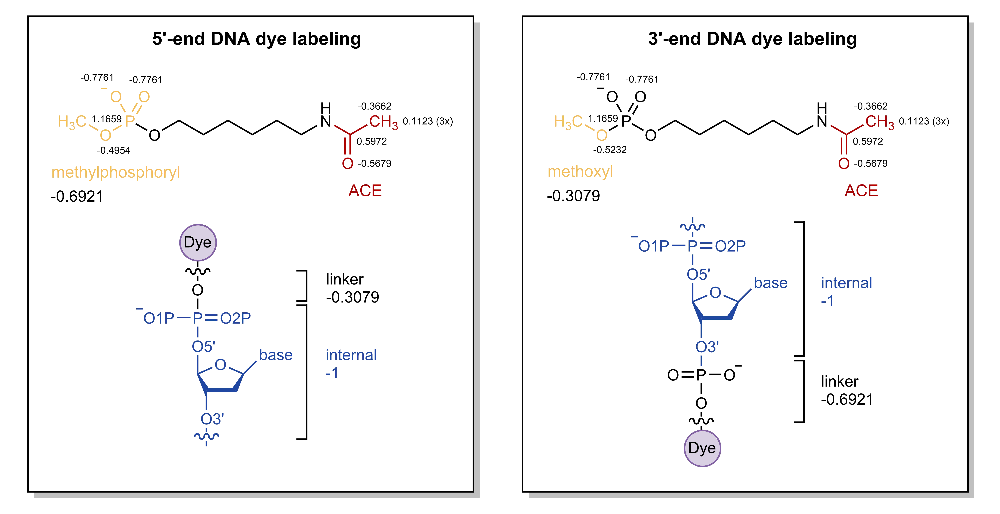
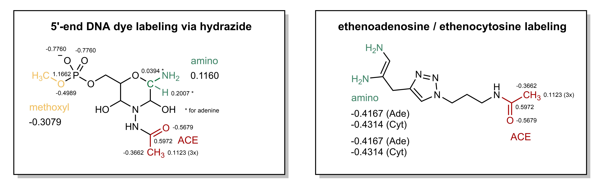

Deriving FRETlabel fragments
Contents
Deriving FRETlabel fragments¶
This notebook describes the derivation of all base-linker fragments currently available in FRETlabel (A step-wise tutorial for dT-C5-Cy3 is available here). Before starting make sure that the mol2 files of the nucleotides have the correct partial charges assigned. See this notebook for instructions.
Pre-generated parameters in FRETlabel
RNA and DNA nucleotides with correct partial charges are located in
fragments/1_bases/processed/Linkers for selected labeling chemistries are located in
fragments/2_linkersDyes from AMBER-DYES are located in
fragments/3_dyes/(in Tripos mol2 format)base_linker generated herein are located in
fragments/4_base_linker/Generated acpype output files are located in
fragments/5_acpype/force field parameters from AMBER-DYES are located in
forcefields/2_amberdyesbonded and nonbonded parameters from AMBER-14 are located in
forcefields/3_amber14sbgenerated force field parameters for fretlabel are located in
forcefields/4_fretlabel
import pandas as pd
from biopandas.mol2 import PandasMol2
import fretlabel as fl
dyes = [('sCy3', 'C3W'), ('sCy5', 'C5W'), ('Cy7', 'C7N'), ('Cy5.5', 'C55'), ('Cy7.5','C75'),
('Alexa350', 'A35'), ('Alexa488', 'A48'), ('Alexa532', 'A53'), ('Alexa568', 'A56'), ('Alexa594', 'A59'), ('Alexa647', 'A64'),
('Atto390', 'T39'), ('Atto425', 'T42'), ('Atto465', 'T46'), ('Atto488', 'T48'), ('Atto495', 'T49'), ('Atto514', 'T51'), ('Atto520', 'T52'), ('Atto610', 'T61')]
Labeling on C5 of deoxythymidine¶
Geometry optimization¶
Create Gaussian input file
name=MLE_capped
input_folder='in/'
output_folder='out/'
cd fragments/linkers/MLE/
antechamber -i "$input_folder/$name".mol2 -fi mol2 -o "$output_folder/$name".gin -fo gcrt -gv 1 -ge "$output_folder/$name".gesp -ch "$output_folder/$name"_opt -nc 0
Gaussian geometry optimization and ESP calculation
nproc=12
sed 's/#HF.*/\#P b3lyp\/6-31G\* Opt/g' < "$output_folder/$name".gin | sed '/iop/d' | sed '/.*gesp/d' | sed "/--Link1--/ a %nproc=$nproc" > "$output_folder/$name"_b3lyp_opt.gin
sed '/^[[:space:]]*[A-Z]/d' < "$output_folder/$name".gin | sed 's/SCF/Geom=check SCF/g'| sed 's/\(\%chk=.*\)opt/\1esp/g' | sed "/--Link1--/ a %nproc=$nproc" > "$output_folder/$name"_hf_esp.gin
g09 < "$output_folder/$name"_b3lyp_opt.gin > "$output_folder/$name"_b3lyp_opt.gout && cp "$output_folder/$name"_opt.chk "$output_folder/$name"_esp.chk
g09 < "$output_folder/$name"_hf_esp.gin > "$output_folder/$name"_hf_esp.gout
Partial charge fitting with RESP¶
antechamber -i "$input_folder/$name".mol2 -fi mol2 -o "$output_folder/$name".ac -fo ac -pf yes -nc 0
capping_group=MLE_capping_groups.dat
n_atom=`awk '$1 == "GROUP" {print $2}' "$input_folder/$capping_group"`
group_constraint=`awk '$1 == "GROUP" {print $3}' "$input_folder/$capping_group"`
respgen -i "$output_folder/$name".ac -o "$output_folder/$name".respin1 -f resp1 -a "$input_folder/$capping_group"
respgen -i "$output_folder/$name".ac -o "$output_folder/$name".respin2 -f resp2 -a "$input_folder/$capping_group"
# since respgen rounds the group constraint to three decimals replace it with the value from the capping group
for i in `seq $(echo $n_atom | wc -w)`;do
atom=`echo $n_atom | cut -f$i -d' '`
group=`echo $group_constraint | cut -f$i -d' '`
sed -z -i "s/$atom\s*-*\w\.\w*$p/$atom $group/$i" "$output_folder/$name".respin1
sed -z -i "s/$atom\s*-*\w\.\w*$p/$atom $group/$i" "$output_folder/$name".respin2
done
espgen -i "$output_folder/$name"_hf_esp.gout -o "$output_folder/$name"_hf_esp.esp
mv QIN "$output_folder"/
resp -O -i "$output_folder/$name".respin1 -o "$output_folder/$name".respout1 -e "$output_folder/$name"_hf_esp.esp -q "$output_folder"/QIN -t "$output_folder"/qout_stage1 -p "$output_folder"/punch1 -s "$output_folder"/esout1
resp -O -i "$output_folder/$name".respin2 -o "$output_folder/$name".respout2 -e "$output_folder/$name"_hf_esp.esp -q "$output_folder"/qout_stage1 -t "$output_folder"/qout_stage2 -p "$output_folder"/punch2 -s "$output_folder"/esout2
antechamber -i "$output_folder/$name".ac -fi ac -o "$output_folder/$name"_resp.mol2 -fo mol2 -c rc -cf "$output_folder"/qout_stage2 -pf yes -at amber
Tip
The above two-stage RESP fitting protocol is wrapped in the following script:
resp_fit.sh -n MLE_capped -i 'in/' -o 'out/' -g MLE_capping_groups.dat -c 0
Coupling to base and dye¶
First couple the deoxythymine base and the MLE linker
cmd.load('fragments/linkers/MLE/out/MLE_capped_resp.mol2')
names_methylene = ['C7','H01','H02']
#base_resn = ('deoxythymidine', 'DTM')
base_resn = ('oxythymidine', 'RUM')
cmd.reinitialize()
cmd.load('fragments/bases/out/{}.mol2'.format(base_resn[0]))
cmd.load('fragments/linkers/MLE/out/MLE_capped_resp.mol2')
cmd.remove('MLE_capped_resp and name {}'.format('+'.join(str(i) for i in names_methylene)))
cmd.remove('{} and (name H71 or name H72)'.format(base_resn[0]))
cmd.fuse('{} and name C7'.format(base_resn[0]), 'MLE_capped_resp and name C8 and resn MLE')
cmd.delete('{}'.format(base_resn[0]))
cmd.alter('all', 'type="ATOM"')
cmd.alter('all', 'elem=""') # PyMOL struggles with atom type definitions in mol2 files, therefore let PyMOL guess the elements itself
cmd.set_name('MLE_capped_resp', base_resn[1])
cmd.set_title('MLE',1,base_resn[1])
cmd.unbond('resn {} and name C8'.format(base_resn[1]), 'resn DT and name C7')
cmd.bond('resn {} and name C8'.format(base_resn[1]), 'resn DT and name C7', 2)
fl.ff.pymol_savemol2('fragments/base_linkers/{}.mol2'.format(base_resn[1]), base_resn[1], overwrite=True)
Check the correct charge
fl.ff.check_charge('fragments/base_linkers/{}.mol2'.format(base_resn[1]), -1)
Now, add the fluorophore
base_resn_list = [('deoxythymidine', 'DTM'),
('oxythymidine', 'RUM')]
for base_resn in base_resn_list:
for name,dye in dyes:
fl.ff.couple_dye2baselinker(dye, base_resn[1], 'C99', ['C17', 'O98', 'C16'], ['O98', 'C16', 'C17', 'H95', 'H96', 'H97'])
cmd.alter('all', 'elem=""')
fl.ff.save_molecule('fretlabel/dyes/{}_{}.pdb'.format(dye, base_resn[1]), '{}_{}'.format(dye, base_resn[1]), 'pdb', overwrite=True)
#fl.ff.update_dye_library({'filename':'{}_DTM'.format(dye), 'dye':name, 'base':'RU+DT', 'linker':'MLE', 'chemistry':'dT-C5', 'position':'internal'}, 'fretlabel/dyes/dye_library.json', 'fretlabel/dyes/dye_library.json', overwrite=True)
fl.ff.update_dye_library({'filename':'{}_{}'.format(dye, base_resn[1]), 'dye':name, 'base':base_resn[1][0:2], 'linker':'MLE', 'chemistry':'U/dT-C5', 'position':'internal'}, 'fretlabel/dye_library.json', 'fretlabel/dye_library.json', overwrite=True)
Labeling via phosphate at 5’-end¶
Geometry optimization¶
Create Gaussian input file
name=POS_capped
input_folder='in/'
output_folder='out/'
Here, the net charge is -1
cd fragments/linkers/POS/
antechamber -i "$input_folder/$name".mol2 -fi mol2 -o "$output_folder/$name".gin -fo gcrt -gv 1 -ge "$output_folder/$name".gesp -ch "$output_folder/$name"_opt -nc -1
Gaussian geometry optimization and ESP calculation
nproc=12
sed 's/#HF.*/\#P b3lyp\/6-31G\* Opt/g' < "$output_folder/$name".gin | sed '/iop/d' | sed '/.*gesp/d' | sed "/--Link1--/ a %nproc=$nproc" > "$output_folder/$name"_b3lyp_opt.gin
sed '/^[[:space:]]*[A-Z]/d' < "$output_folder/$name".gin | sed 's/SCF/Geom=check SCF/g'| sed 's/\(\%chk=.*\)opt/\1esp/g' | sed "/--Link1--/ a %nproc=$nproc" > "$output_folder/$name"_hf_esp.gin
g09 < "$output_folder/$name"_b3lyp_opt.gin > "$output_folder/$name"_b3lyp_opt.gout && cp "$output_folder/$name"_opt.chk "$output_folder/$name"_esp.chk
g09 < "$output_folder/$name"_hf_esp.gin > "$output_folder/$name"_hf_esp.gout
Partial charge fitting with RESP¶
Rational for linker RESP charge derivation at 3’/5’-ends via phosphate
Reference: AMBER-MD tutorial
In the AMBER force fields (Cornell, JACS, 1995) the DNA nucleotides the charges at the termini is as follows:
5’-end nucleotide: -0.3079
3’-end nucleotide: -0.6921
For RNA the charges are:
5’-end nucleotide: -0.3081
3’-end nucleotide: -0.6919

Labeled DNA 5’-terminus:
The 5’-end nucleotide will become an internal residue (DNA charge: -1; i.e. the phosphate of the linker will be transferred to this nucleotide). The linker will become the new 5’-terminus (DNA charge: -0.3079). For this purpose, the methylphosphate cap (\(-PO_2-OCH_3\)) of the linker (which will be removed) should be constrained to a charge of -1-(-0.3079)=-0.6921 during the RESP fit.
Labeled DNA 3’-terminus:
The 3’-end nucleotide will become an internal residue (DNA charge: -1). The linker will become the new 3’-terminus (DNA charge: -0.36921, i.e. \(-PO_2-\) will be retained). For this purpose, the methoxy cap (\(-O-CH_3\)) of the linker (which will be removed) should be constrained to a charge of -1-(-0.6021)=-0.3079 during the RESP fit.
{kind=link}
Run Antechamber with net charge -1
antechamber -i "$input_folder/$name".mol2 -fi mol2 -o "$output_folder/$name".ac -fo ac -pf yes -nc -1
capping_group=POS_capping_groups_5prime_DNA.dat
n_atom=`awk '$1 == "GROUP" {print $2}' "$input_folder/$capping_group"`
group_constraint=`awk '$1 == "GROUP" {print $3}' "$input_folder/$capping_group"`
respgen -i "$output_folder/$name".ac -o "$output_folder/$name".respin1 -f resp1 -a "$input_folder/$capping_group"
respgen -i "$output_folder/$name".ac -o "$output_folder/$name".respin2 -f resp2 -a "$input_folder/$capping_group"
# since respgen rounds the group constraint to three decimals replace it with the value from the capping group
for i in `seq $(echo $n_atom | wc -w)`;do
atom=`echo $n_atom | cut -f$i -d' '`
group=`echo $group_constraint | cut -f$i -d' '`
sed -z -i "s/$atom\s*-*\w\.\w*$p/$atom $group/$i" "$output_folder/$name".respin1
sed -z -i "s/$atom\s*-*\w\.\w*$p/$atom $group/$i" "$output_folder/$name".respin2
done
espgen -i "$output_folder/$name"_hf_esp.gout -o "$output_folder/$name"_hf_esp.esp
mv QIN "$output_folder"/
resp -O -i "$output_folder/$name".respin1 -o "$output_folder/$name".respout1 -e "$output_folder/$name"_hf_esp.esp -q "$output_folder"/QIN -t "$output_folder"/qout_stage1 -p "$output_folder"/punch1 -s "$output_folder"/esout1
resp -O -i "$output_folder/$name".respin2 -o "$output_folder/$name".respout2 -e "$output_folder/$name"_hf_esp.esp -q "$output_folder"/qout_stage1 -t "$output_folder"/qout_stage2 -p "$output_folder"/punch2 -s "$output_folder"/esout2
antechamber -i "$output_folder/$name".ac -fi ac -o "$output_folder/$name"_resp.mol2 -fo mol2 -c rc -cf "$output_folder"/qout_stage2 -pf yes -at amber
Tip
The above two-stage RESP fitting protocol is wrapped in the following script:
resp_fit.sh -n POS_capped -i 'in/' -o 'out/' -g POS_capping_groups_5prime_DNA.dat -c -1
Coupling of base and dye¶
Again, first couple the bases and the POS linker
names_methyl = ['C01','H01','H02','H03']
names_phosphate = ['P','O1P','O5\'','O2P']
base_resn = ('deoxythymidine', 'DTP')
# base_resn = ('deoxyadenosine', 'DAP')
# base_resn = ('deoxyguanosine', 'DGP')
# base_resn = ('deoxycytidine', 'DCP')
# base_resn = ('uridine', 'RUP')
# base_resn = ('adenosine', 'RAP')
# base_resn = ('guanosine', 'RGP')
# base_resn = ('cytidine', 'RCP')
cmd.reinitialize()
cmd.load('fragments/bases/out/{}.mol2'.format(base_resn[0]))
if 'D' in base_resn[1]:
POS_capped_resp = 'POS_capped_resp_5prime_DNA'
else:
POS_capped_resp = 'POS_capped_resp_5prime_RNA'
cmd.load('fragments/linkers/POS/out/{}.mol2'.format(POS_capped_resp))
cmd.align('{} and name {}'.format(POS_capped_resp, '+'.join(str(i) for i in names_phosphate)), '{} and (name P or name O1P or name O2P or name O5\')'.format(base_resn[0]))
cmd.remove('{} and name {}'.format(POS_capped_resp, '+'.join(str(i) for i in names_methyl+names_phosphate)))
cmd.create(base_resn[1], '{} or {}'.format(POS_capped_resp, base_resn[0]))
cmd.delete(base_resn[0])
cmd.delete(POS_capped_resp)
cmd.bond('{} and name P'.format(base_resn[1]), '{} and name O01'.format(base_resn[1]))
cmd.alter('all', 'type="ATOM"')
cmd.alter('all', 'elem=""')
cmd.set_title(base_resn[1],1,base_resn[1])
fl.ff.pymol_savemol2('fragments/base_linkers/{}.mol2'.format(base_resn[1]), base_resn[1], overwrite=True)
Check the correct charge
if 'D' in base_resn[1]:
fl.ff.check_charge('fragments/base_linkers/{}.mol2'.format(base_resn[1]), -1.3079)
else:
fl.ff.check_charge('fragments/base_linkers/{}.mol2'.format(base_resn[1]), -1.3081)
Then add the fluorophore
base_resn_list = [('deoxythymidine', 'DTP'),
('deoxyadenosine', 'DAP'),
('deoxyguanosine', 'DGP'),
('deoxycytidine', 'DCP'),
('uridine', 'RUP'),
('adenosine', 'RAP'),
('guanosine', 'RGP'),
('cytidine', 'RCP')]
for base_resn in base_resn_list:
for name, dye in dyes:
fl.ff.couple_dye2baselinker(dye, base_resn[1], 'C99', ['C17', 'O98', 'C16'], ['O98', 'C16', 'C17', 'H95', 'H96', 'H97'])
cmd.alter('all', 'elem=""')
fl.ff.save_molecule('fluorlabel/dyes/{}_{}.pdb'.format(dye, base_resn[1]), '{}_{}'.format(dye, base_resn[1]), 'pdb', overwrite=True)
for base in ['RA', 'RG', 'RC', 'RU', 'DA', 'DG', 'DC', 'DT']:
fl.ff.update_dye_library({'filename':'{}_{}P'.format(dye, base), 'dye':name, 'base':base, 'linker':'POS', 'chemistry':'phosphate', 'position':"5'-end"}, 'fluorlabel/dye_library.json', 'fluorlabel/dye_library.json', overwrite=True)
Labeling via phosphate at 3’-end¶
Same as for 5’-end. For RESP use instead:
resp_fit.sh -n POS_capped -i 'in/' -o 'out/' -g POS_capping_groups_3prime_DNA.dat -c -1
resp_fit.sh -n POS_capped -i 'in/' -o 'out/' -g POS_capping_groups_3prime_RNA.dat -c -1
First couple the bases and the POS linker, then add the dye.
names_methyl = ['C01','H01','H02','H03']
base_resn = ('deoxythymidine', 'DTO')
# base_resn = ('deoxyadenosine', 'DAO')
# base_resn = ('deoxyguanosine', 'DGO')
# base_resn = ('deoxycytidine', 'DCO')
# base_resn = ('uridine', 'RUO')
# base_resn = ('adenosine', 'RAO')
# base_resn = ('guanosine', 'RGO')
# base_resn = ('cytidine', 'RCO')
cmd.reinitialize()
cmd.load('fragments/bases/out/{}.mol2'.format(base_resn[0]))
if 'D' in base_resn[1]:
POS_capped_resp = 'POS_capped_resp_3prime_DNA'
else:
POS_capped_resp = 'POS_capped_resp_3prime_RNA'
cmd.load('fragments/linkers/POS/out/{}.mol2'.format(POS_capped_resp))
cmd.alter('{} and name P'.format(POS_capped_resp),'name="P1"')
cmd.alter('{} and name O1P'.format(POS_capped_resp),'name="O3P"')
cmd.alter('{} and name O2P'.format(POS_capped_resp),'name="O4P"')
cmd.pair_fit('{} and name O5\''.format(POS_capped_resp),'{} and name O3\''.format(base_resn[0]),
'{} and name C01'.format(POS_capped_resp), '{} and name C3\''.format(base_resn[0]),
'{} and name H03'.format(POS_capped_resp), '{} and name H3\''.format(base_resn[0]))
cmd.remove('{} and (name {} or name O5\')'.format(POS_capped_resp, '+'.join(str(i) for i in names_methyl)))
cmd.create(base_resn[1], '{} or {}'.format(POS_capped_resp, base_resn[0]))
cmd.delete(base_resn[0])
cmd.delete(POS_capped_resp)
cmd.bond('{} and name P1 and resn POS'.format(base_resn[1]), '{} and name O3\''.format(base_resn[1]))
cmd.alter('all', 'type="ATOM"')
cmd.alter('all', 'elem=""')
cmd.set_title(base_resn[1],1,base_resn[1])
fl.ff.pymol_savemol2('fragments/base_linkers/{}.mol2'.format(base_resn[1]), base_resn[1], overwrite=True)
Check the correct charge
if 'D' in base_resn[1]:
fl.ff.check_charge('fragments/base_linkers/{}.mol2'.format(base_resn[1]), -1.6921)
else:
fl.ff.check_charge('fragments/base_linkers/{}.mol2'.format(base_resn[1]), -1.6919)
base_resn_list = [('deoxythymidine', 'DTO'),
('deoxyadenosine', 'DAO'),
('deoxyguanosine', 'DGO'),
('deoxycytidine', 'DCO'),
('uridine', 'RUO'),
('adenosine', 'RAO'),
('guanosine', 'RGO'),
('cytidine', 'RCO')]
for base_resn in base_resn_list:
for name, dye in dyes:
fl.ff.couple_dye2baselinker(dye, base_resn[1], 'C99', ['C17', 'O98', 'C16'], ['O98', 'C16', 'C17', 'H95', 'H96', 'H97'])
cmd.alter('all', 'elem=""')
fl.ff.save_molecule('fluorlabel/dyes/{}_{}.pdb'.format(dye, base_resn[1]), '{}_{}'.format(dye, base_resn[1]), 'pdb', overwrite=True)
for base in ['RA', 'RG', 'RC', 'RU', 'DA', 'DG', 'DC', 'DT']:
fl.ff.update_dye_library({'filename':'{}_{}O'.format(dye, base), 'dye':name, 'base':base, 'linker':'POS', 'chemistry':'phosphate', 'position':"3'-end"}, 'fluorlabel/dye_library.json', 'fluorlabel/dye_library.json', overwrite=True)
Internal labeling via ethenoadenine or ethenocytosine¶
Geometry optimization¶
Same as for deoxythymine (MLE) but with name=ETH_capped
Partial charge fitting with RESP¶
Rational for linker RESP charge derivation at internal ethenoadenine / ethenocytosine
The amino capping groups of the linker (which will be removed) are constrained to the partial charge of H61+H62 (adenosine/deoxyadenosine) or H41+H42 (cytidine/deoxycytidine) (e.g. for deoxyadenosine 2*(-0.4167)= -0.8334). Thus for deoxyadenosine the linker will be 0-(-0.8334)=0.8334 which compensates the missing H61/N62 or H41/N42 in the ethenoadenosine / ethenocytidine.
In general the same as for deoxythymine (MLE). For RESP use:
resp_fit.sh -n ETH_capped -i 'in/' -o 'out/' -g ETH_capping_groups_adenine_DNA.dat -c 0
resp_fit.sh -n ETH_capped -i 'in/' -o 'out/' -g ETH_capping_groups_cytosine_DNA.dat -c 0
resp_fit.sh -n ETH_capped -i 'in/' -o 'out/' -g ETH_capping_groups_adenine_RNA.dat -c 0
resp_fit.sh -n ETH_capped -i 'in/' -o 'out/' -g ETH_capping_groups_cytosine_RNA.dat -c 0
names_amine = ['N1','N6','H11','H12','H61','H62']
base_resn = ('deoxyadenosine', 'DAE')
#base_resn = ('deoxycytidine', 'DCE')
#base_resn = ('adenosine', 'RAE')
#base_resn = ('cytidine', 'RCE')
cmd.reinitialize()
cmd.load('fragments/bases/out/{}.mol2'.format(base_resn[0]))
if 'A' in base_resn[1]:
cmd.load('fragments/linkers/ETH/out/ETH_capped_resp_{}.mol2'.format(base_resn[0]))
cmd.pair_fit('ETH_capped_resp and name N1','{} and name N1'.format(base_resn[0]),
'ETH_capped_resp and name N6', '{} and name N6'.format(base_resn[0]),
'ETH_capped_resp and name H11', '{} and name C2'.format(base_resn[0]))
else:
cmd.load('fragments/linkers/ETH/out/ETH_capped_resp_{}.mol2'.format(base_resn[0]))
cmd.pair_fit('ETH_capped_resp and name N1','{} and name N3'.format(base_resn[0]),
'ETH_capped_resp and name N6', '{} and name N4'.format(base_resn[0]),
'ETH_capped_resp and name H11', '{} and name C2'.format(base_resn[0]))
cmd.remove('ETH_capped_resp and name {}'.format('+'.join(str(i) for i in names_amine)))
if 'A' in base_resn[1]:
cmd.remove('{} and (name H61 or name H62)'.format(base_resn[0]))
cmd.remove('{} and name H61'.format(base_resn[0]))
cmd.unbond('{} and name C6'.format(base_resn[0]), '{} and name N6'.format(base_resn[0]))
cmd.bond('{} and name C6'.format(base_resn[0]), '{} and name N6'.format(base_resn[0]), 2)
cmd.unbond('{} and name C6'.format(base_resn[0]), '{} and name N1'.format(base_resn[0]))
cmd.bond('{} and name C6'.format(base_resn[0]), '{} and name N1'.format(base_resn[0]), 1)
else:
cmd.remove('{} and (name H41 or name H42)'.format(base_resn[0]))
cmd.unbond('{} and name C4'.format(base_resn[0]), '{} and name N4'.format(base_resn[0]))
cmd.bond('{} and name C4'.format(base_resn[0]), '{} and name N4'.format(base_resn[0]), 2)
cmd.unbond('{} and name C4'.format(base_resn[0]), '{} and name N3'.format(base_resn[0]))
cmd.bond('{} and name C4'.format(base_resn[0]), '{} and name N3'.format(base_resn[0]), 1)
cmd.create(base_resn[1], 'ETH_capped or {}'.format(base_resn[0]))
cmd.delete(base_resn[0])
cmd.delete('ETH_capped')
if 'A' in base_resn[1]:
cmd.bond('{} and name N1'.format(base_resn[1]), '{} and name C9'.format(base_resn[1]))
cmd.bond('{} and name N6'.format(base_resn[1]), '{} and name C7'.format(base_resn[1]))
else:
cmd.bond('{} and name N3'.format(base_resn[1]), '{} and name C9'.format(base_resn[1]))
cmd.bond('{} and name N4'.format(base_resn[1]), '{} and name C7'.format(base_resn[1]))
cmd.alter('all', 'type="ATOM"')
cmd.alter('all', 'elem=""')
cmd.set_title(base_resn[1],1,base_resn[1])
fl.ff.pymol_savemol2('fragments/base_linkers/{}.mol2'.format(base_resn[1]), base_resn[1], overwrite=True)
Check the correct charge
fl.ff.check_charge('fragments/base_linkers/{}.mol2'.format(base_resn[1]), -1)
base_resn_list = [('deoxyadenosine', 'DAE'),
('deoxycytidine', 'DCE'),
('adenosine', 'RAE'),
('cytidine', 'RCE')]
for base_resn in base_resn_list:
for name, dye in dyes:
fl.ff.couple_dye2baselinker(dye, base_resn[1], 'C99', ['C17', 'O98', 'C16'], ['O98', 'C16', 'C17', 'H95', 'H96', 'H97'])
cmd.alter('all', 'elem=""')
fl.ff.save_molecule('fluorlabel/dyes/{}_{}.pdb'.format(dye, base_resn[1]), '{}_{}'.format(dye, base_resn[1]), 'pdb', overwrite=True)
for base in ['RA', 'RC', 'DA', 'DC']:
fl.ff.update_dye_library({'filename':'{}_{}E'.format(dye, base), 'dye':name, 'base':base, 'linker':'ETH', 'chemistry':'etheno', 'position':'internal'}, 'fluorlabel/dye_library.json', 'fluorlabel/dye_library.json', overwrite=True)
Labeling via hydrazide at 3’-end¶
Geometry optimization¶
Same as for phosphate (POS) but with name=HYD_capped
Partial charge fitting with RESP¶
Rational for linker RESP charge derivation at 3’-end via hydrazide
Insertion of a hydrazide with sugar ring closure can only occur in riboses (RNA) because it requires a dialdehyde (O2’, O3’). The four RNA bases are parameterized such that the partial charges of the base + C1’ + H1’ = 0.1160. The NH2 capping group of the linker (which is a placeholder for the base) + C1’ + H1’ are therefore constrained to 0.1160. The charges of C1’ and H1’ are fixed to those of the respective nucleotide in the Amber force field (e.g. for adenosine: C1’=0.0394 and H1’=0.2007)
The methoxy cap (which will be removed) is constrained to -0.3081 such that the remaining fragment will sum up to -0.6919.
{kind=link}
In general the same as for phosphate (POS). For RESP use:
resp_fit.sh -n HYD_capped -i 'in/' -o 'out/' -g HYD_capping_groups_adenine_RNA.dat -c -1
resp_fit.sh -n HYD_capped -i 'in/' -o 'out/' -g HYD_capping_groups_guanine_RNA.dat -c -1
resp_fit.sh -n HYD_capped -i 'in/' -o 'out/' -g HYD_capping_groups_cytosine_RNA.dat -c -1
resp_fit.sh -n HYD_capped -i 'in/' -o 'out/' -g HYD_capping_groups_uracil_RNA.dat -c -1
names_methoxyl = ['C01','H01','H02','H03', 'O01']
names_amine = ['N97','H94','H93']
# only RNA residues because labeling needs O2' and O3' to form a dialdehyde
base_resn = ('uridine', 'RUH')
base_resn = ('adenosine', 'RAH')
base_resn = ('guanosine', 'RGH')
base_resn = ('cytidine', 'RCH')
cmd.reinitialize()
cmd.load('fragments/bases/out/{}.mol2'.format(base_resn[0]))
cmd.load('fragments/linkers/HYD/out/HYD_capped_resp_{}_RNA.mol2'.format(base_resn[0]))
if ('A' in base_resn[1]) or ('G' in base_resn[1]):
atm = 'N9'
else:
atm = 'N1'
cmd.pair_fit('HYD_capped and name O5\'','{} and name O5\''.format(base_resn[0]),
'HYD_capped and name C5\'', '{} and name C5\''.format(base_resn[0]),
'HYD_capped and name P', '{} and name P'.format(base_resn[0]),
'HYD_capped and name C4\'', '{} and name C4\''.format(base_resn[0]),
'HYD_capped and name O4\'', '{} and name O4\''.format(base_resn[0]),
'HYD_capped and name N97', '{} and name {}'.format(base_resn[0], atm))
cmd.remove('HYD_capped_resp and name {}'.format('+'.join(str(i) for i in names_methoxyl)))
cmd.remove('HYD_capped_resp and name {}'.format('+'.join(str(i) for i in names_amine)))
cmd.remove('{} and name {}'.format(base_resn[0], 'C*\'+O*\'+O*P*+H*\'*+P'))
cmd.create(base_resn[1], 'HYD_capped_resp or {}'.format(base_resn[0]))
cmd.delete(base_resn[0])
cmd.delete('HYD_capped_resp')
cmd.bond('{} and name {}'.format(base_resn[1], atm), '{} and name C1\''.format(base_resn[1]))
cmd.set_title(base_resn[1],1,base_resn[1])
fl.ff.pymol_savemol2('fragments/base_linkers/{}.mol2'.format(base_resn[1]), base_resn[1], overwrite=True)
Check the correct charge
if 'D' in base_resn[1]:
fl.ff.check_charge('fragments/base_linkers/{}.mol2'.format(base_resn[1]), -0.6921)
else:
fl.ff.check_charge('fragments/base_linkers/{}.mol2'.format(base_resn[1]), -0.6919)
base_resn_list = [('uridine', 'RUH'),
('adenosine', 'RAH'),
('guanosine', 'RGH'),
('cytidine', 'RCH')]
for base_resn in base_resn_list:
for name, dye in dyes:
fl.ff.couple_dye2baselinker(dye, base_resn[1], 'C99', ['C17', 'O98', 'C16'], ['O98', 'C16', 'C17', 'H95', 'H96', 'H97'])
cmd.alter('all', 'elem=""')
fl.ff.save_molecule('fluorlabel/dyes/{}_{}.pdb'.format(dye, base_resn[1]), '{}_{}'.format(dye, base_resn[1]), 'pdb', overwrite=True)
for base in ['RA', 'RG', 'RC', 'RU']:
fl.ff.update_dye_library({'filename':'{}_{}H'.format(dye, base), 'dye':name, 'base':base, 'linker':'HYD', 'chemistry':'hydrazide', 'position':"3'-end"}, 'fluorlabel/dye_library.json', 'fluorlabel/dye_library.json', overwrite=True)
Forcefield parameterization¶
First, read in AMBER-DYES force field (Graen et al. JCTC, 2014)
amberdyes_ff = fl.ff.Parameters.read_amberdyes(['fretlabel/forcefields/3_fretlabel/ffbonded_amberdyes.itp', 'fretlabel/forcefields/amberdyes/ffnonbonded_amberdyes.itp'])
Read the force field of your choice (here AMBER-ff14sb shipped with FRETlabel)
amber14sb_ff = fl.ff.Parameters.read_ff(['amber14sb/ffbonded.itp', 'amber14sb/ffnonbonded.itp'])
Deoxythymidine¶
Run Acpype on the internal DTM fragment
cd fragments/5_acpype
base_linker=DTM
base=DT
base_linker=RUM
base=RU
linker=MLE
filename=../base_linkers/"$base_linker".mol2
sed "s/${base}/${base_linker}/g" "$filename" | sed "s/${linker}/${base_linker}/g" > "$base_linker"_ff.mol2
acpype -i "$base_linker"_ff.mol2 -o gmx -n -1 -a amber -c user
baselinkers_itp = {}
baselinkers_ff = {}
Read the itp files into the fl.ff.Molecule class and the forcefield modification parameters into the fl.ff.Parameters class.
moleculetypes = ['DTM', 'RUM']
for mol in moleculetypes:
baselinkers_itp[mol] = fl.ff.Molecule.read_molecule('fragments/acpype/{}_ff.acpype/{}_ff_GMX.itp'.format(mol,mol), 'FLUOR-DYNAMICS')
baselinkers_itp[mol].change_type('O3\'', 'OS') # residue is internal not terminal
for a in ['O98', 'C16', 'C17', 'H95', 'H96', 'H97']:
baselinkers_itp[mol].remove_atom(a)
baselinkers_ff[mol] = fl.ff.Parameters.read_frcmod('fragments/acpype/{}_ff.acpype/{}_ff_AC.frcmod'.format(mol,mol), baselinkers_itp[mol].atomtypes_molecule)
amberdyes_ff.append(baselinkers_ff[mol])
3’/5’-end phosphates and 3’-end hydrazide¶
Acpype requires a residue with integral charge (…,-1,0,1,…). Therefore, we will combine the 3’-end and 5’-end fragments into a dinucleotide (charge: -2) using PyMOL.
end = {'base':'DA', '5':'DAP', '3':'DAO'}
# end = {'base':'DG', '5':'DGP', '3':'DGO'}
# end = {'base':'DC', '5':'DCP', '3':'DCO'}
# end = {'base':'DT', '5':'DTP', '3':'DTO'}
# end = {'base':'RA', '5':'RAP', '3':'RAO'}
# end = {'base':'RG', '5':'RGP', '3':'RGO'}
# end = {'base':'RC', '5':'RCP', '3':'RCO'}
# end = {'base':'RU', '5':'RUP', '3':'RUO'}
# end = {'base':'RA', '5':'RAP', '3':'RAH'}
# end = {'base':'RG', '5':'RGP', '3':'RGH'}
# end = {'base':'RC', '5':'RCP', '3':'RCH'}
# end = {'base':'RU', '5':'RUP', '3':'RUH'}
cmd.reinitialize()
cmd.load('fragments/base_linkers/{}.mol2'.format(end['5']))
cmd.load('fragments/base_linkers/{}.mol2'.format(end['3']))
# reassigning residue numbers and segment ids preserves the atom numbering after running through acpype
cmd.alter('resn POS and {}'.format(end['5']), 'resi="1"')
cmd.alter('resn POS and {}'.format(end['5']), 'segi="1"')
cmd.alter('resn {}'.format(end['base']), 'resi="2"')
cmd.alter('resn {}'.format(end['base']), 'segi="2"')
cmd.alter('(resn POS or resn HYD) and {}'.format(end['3']), 'resi="3"')
cmd.alter('(resn POS or resn HYD) and {}'.format(end['3']), 'segi="3"')
cmd.remove('{} and resn {}'.format(end['5'], end['base']))
cmd.create('{}_{}'.format(end['5'],end['3']), '{} or {}'.format(end['5'],end['3']))
cmd.bond('(resn {} or resn HYD) and name P'.format(end['base']), 'resn POS and name O01 and resi 1')
cmd.alter('resn POS', 'resn="{}"'.format(end['3']))
cmd.alter('resn {} or resn HYD'.format(end['base']), 'resn="{}"'.format(end['3']))
fl.ff.pymol_savemol2('fragments/acpype/{}_{}_ff.mol2'.format(end['5'], end['3']), '{}_{}'.format(end['5'], end['3']), overwrite=True)
Run Acpype on the dinucleotide fragments.
cd fragments/5_acpype/
fusion=DAP_DAO
fusion=DGP_DGO
fusion=DCP_DCO
fusion=DTP_DTO
fusion=RAP_RAO
fusion=RGP_RGO
fusion=RCP_RCO
fusion=RUP_RUO
fusion=RAP_RAH
fusion=RGP_RGH
fusion=RCP_RCH
fusion=RUP_RUH
acpype -i "$fusion"_ff.mol2 -o gmx -n -1 -a amber -c user
Read the itp files into the fl.ff.Molecule class and the forcefield modification parameters into the fl.ff.Parameters class.
Note
The dinucleotides are differentiated by their subst_id.
moleculetypes = [{'base':'DA', '5':'DAP', '3':'DAO'},
{'base':'DG', '5':'DGP', '3':'DGO'},
{'base':'DC', '5':'DCP', '3':'DCO'},
{'base':'DT', '5':'DTP', '3':'DTO'},
{'base':'RA', '5':'RAP', '3':'RAO'},
{'base':'RG', '5':'RGP', '3':'RGO'},
{'base':'RC', '5':'RCP', '3':'RCO'},
{'base':'RU', '5':'RUP', '3':'RUO'},
{'base':'RU', '5':'RAP', '3':'RAH'},
{'base':'RU', '5':'RGP', '3':'RGH'},
{'base':'RU', '5':'RCP', '3':'RCH'},
{'base':'RU', '5':'RUP', '3':'RUH'}]
for end in moleculetypes:
fusion_itp = fl.ff.Molecule.read_molecule('fragments/acpype/{}_{}_ff.acpype/{}_{}_ff_GMX.itp'.format(end['5'],end['3'],end['5'],end['3']), 'FLUOR-DYNAMICS')
if 'H' not in end['3']:
fusion_itp.change_type('O3\'', 'OS') # residue is internal not terminal
baselinkers_ff['{}_{}'.format(end['5'],end['3'])] = fl.ff.Parameters.read_frcmod('fragments/acpype/{}_{}_ff.acpype/{}_{}_ff_AC.frcmod'.format(end['5'],end['3'],end['5'],end['3']), fusion_itp.atomtypes_molecule)
amberdyes_ff.append(baselinkers_ff['{}_{}'.format(end['5'],end['3'])])
ff_mol2 = PandasMol2().read_mol2('fragments/acpype/{}_{}_ff.mol2'.format(end['5'],end['3']))
atoms5 = fusion_itp.atoms[(ff_mol2.df['subst_id']==1) | (ff_mol2.df['subst_id']==2)]
atoms3 = fusion_itp.atoms[(ff_mol2.df['subst_id']==2) | (ff_mol2.df['subst_id']==3)]
bonds5 = fusion_itp.bonds[fusion_itp.bonds['i'].isin(atoms5['nr']) & fusion_itp.bonds['j'].isin(atoms5['nr'])]
bonds3 = fusion_itp.bonds[fusion_itp.bonds['i'].isin(atoms3['nr']) & fusion_itp.bonds['j'].isin(atoms3['nr'])]
impropers5 = fusion_itp.impropers[fusion_itp.impropers['i'].isin(atoms5['nr']) & fusion_itp.impropers['j'].isin(atoms5['nr']) & fusion_itp.impropers['k'].isin(atoms5['nr']) & fusion_itp.impropers['l'].isin(atoms5['nr'])]
impropers3 = fusion_itp.impropers[fusion_itp.impropers['i'].isin(atoms3['nr']) & fusion_itp.impropers['j'].isin(atoms3['nr']) & fusion_itp.impropers['k'].isin(atoms3['nr']) & fusion_itp.impropers['l'].isin(atoms3['nr'])]
baselinkers_itp[end['5']] = fl.ff.Molecule(end['5'], atoms5, bonds5, None, None, impropers5)
baselinkers_itp[end['3']] = fl.ff.Molecule(end['3'], atoms3, bonds3, None, None, impropers3)
for a in ['O98', 'C16', 'C17', 'H95', 'H96', 'H97']:
baselinkers_itp[end['5']].remove_atom(a)
baselinkers_itp[end['3']].remove_atom(a)
Ethenoadenine and ethenocytosine¶
cd fragments/5_acpype
base_linker=RAE
base=RA
base_linker=RCE
base=RC
base_linker=DAE
base=DA
base_linker=DCE
base=DC
linker=ETH
filename=../base_linkers/"$base_linker".mol2
sed "s/${base}/${base_linker}/g" "$filename" | sed "s/${linker}/${base_linker}/g" > "$base_linker"_ff.mol2
acpype -i "$base_linker"_ff.mol2 -o gmx -n -1 -a amber -c user
moleculetypes = ['RAE', 'RCE', 'DAE', 'DCE']
for mol in moleculetypes:
baselinkers_itp[mol] = fl.ff.Molecule.read_molecule('fragments/acpype/{}_ff.acpype/{}_ff_GMX.itp'.format(mol,mol), 'FLUOR-DYNAMICS')
baselinkers_itp[mol].change_type('O3\'', 'OS') # residue is internal not terminal
for a in ['O98', 'C16', 'C17', 'H95', 'H96', 'H97']:
baselinkers_itp[mol].remove_atom(a)
baselinkers_ff[mol] = fl.ff.Parameters.read_frcmod('fragments/acpype/{}_ff.acpype/{}_ff_AC.frcmod'.format(mol,mol), baselinkers_itp[mol].atomtypes_molecule)
amberdyes_ff.append(baselinkers_ff[mol])
Update bonded and nonbonded parameters¶
Define the atoms for the specialbonds.
atoms_amberdyes = {'bondtypes' : [['ng', 'cg']],
'angletypes': [['c3g', 'ng', 'cg'],
['hng', 'ng', 'cg'],
['ng', 'cg', 'og'],
['ng', 'cg', 'c3g'],
['C', 'N', 'NT']],
'propertypes' : [['c3g', 'c3g', 'cg', 'ng'],
['hcg', 'c3g', 'cg', 'ng'],
['c3g', 'cg', 'ng', 'hng'],
['og', 'cg', 'ng', 'hng'],
['c3g', 'cg', 'ng', 'c3g'],
['og', 'cg', 'ng', 'c3g'],
['C', 'N', 'NT', 'CT'],
['X', 'C', 'N', 'X'],
['X', 'C', 'N', 'X']],
'impropertypes': [['C', 'CB', 'CB', 'NB'],
['CB', 'N*', 'CB', 'NC']]
}
atoms_linker = {'bondtypes': [['N', 'cg']],
'angletypes': [['CT', 'N', 'cg'],
['H', 'N', 'cg'],
['N', 'cg', 'og'],
['N', 'cg', 'c3g'],
['cg', 'N', 'NT']],
'propertypes': [['c3g', 'c3g', 'cg', 'N'],
['hcg', 'c3g', 'cg', 'N'],
['c3g', 'cg', 'N', 'H'],
['og', 'cg', 'N', 'H'],
['c3g', 'cg', 'N', 'CT'],
['og', 'cg', 'N', 'CT'],
['cg', 'N', 'NT', 'CT'],
['c3g', 'cg', 'N', 'NT'],
['og', 'cg', 'N', 'NT']],
'impropertypes': [['CB', 'CB', 'C', 'NB'],
['NC', 'CB', 'CB', 'N*']]
}
atoms_amberdyes2 = {'propertypes' : [['X', 'C', 'N', 'X'],
['X', 'C', 'N', 'X']]
}
atoms_linker2 = {'propertypes' : [['c3g', 'cg', 'N', 'NT'],
['og', 'cg', 'N', 'NT']]
}
specialbond_ff = fl.ff.Parameters.read_specialbond(amberdyes_ff, atoms_amberdyes, atoms_linker)
specialbond2_ff = fl.ff.Parameters.read_specialbond(aber14sb_ff, atoms_amberdyes2, atoms_linker2, 'AMBER14sb')
amberdyes_ff.append(specialbond_ff)
amberdyes_ff.append(specialbond2_ff)
Write new ffnonbonded.itp and ffbonded.itp files of the combined forcefield (ff14sb, amberdyes_ff, baselinkers_ff and specialbond_ff) into a directory 4_fretlabel/.
amberdyes_ff.add2ff('ff14sb', 'forcefields/4_fretlabel/')
Export a residue topology (rtp) file with the new base-linkers.
fl.ff.write_rtp('forcefields/4_fretlabel/fretlabel.rtp', [baselinkers_itp[mol] for mol in baselinkers_itp.keys()])
Update the residuetypes.dat file.
i = 0
for resi in ['DAO', 'DGO', 'DCO', 'DTO', 'DAP', 'DGP', 'DCP', 'DTP', 'DTM', 'RUM', 'DAE', 'DCE']:
if i == 0:
fl.ff.update_residuetypes('{} DNA'.format(resi), 'forcefields/amberdyes/residuetypes_amberdyes.dat', 'forcefields/4_fretlabel/residuetypes.dat', overwrite=True)
else:
fl.ff.update_residuetypes('{} DNA'.format(resi), 'forcefields/4_fretlabel/residuetypes.dat', '.forcefields/4_fretlabel/residuetypes.dat', overwrite=True)
i += 1
for resi in ['RAO', 'RGO', 'RCO', 'RUO', 'RAP', 'RGP', 'RCP', 'RUP', 'RAH', 'RGH', 'RCH', 'RUH', 'RAE', 'RCE']:
fl.ff.update_residuetypes('{} RNA'.format(resi), 'forcefields/4_fretlabel/residuetypes.dat', 'forcefields/4_fretlabel/residuetypes.dat', overwrite=True)
i += 1
for name,resi in dyes:
fl.ff.update_residuetypes('{} RNA'.format(resi), 'forcefields/4_fretlabel/residuetypes.dat', 'forcefields/4_fretlabel/residuetypes.dat', overwrite=True)
i += 1
print('{} new entries in residuetypes.dat'.format(i))
Update the specbond.dat file.
i = 0
for name, resi1 in dyes:
for resi2 in ['DAO', 'DGO', 'DCO', 'DTO', 'DAP', 'DGP', 'DCP', 'DTP',
'RAO', 'RGO', 'RCO', 'RUO', 'RAP', 'RGP', 'RCP', 'RUP',
'DTM', 'RUM', 'RAE', 'RCE', 'DAE', 'DCE']:
if i == 0:
fl.ff.update_specbond('{} C99 1 {} N99 1 0.132 {} {}'.format(resi1, resi2, resi1, resi2), 'forcefields/amberdyes/specbond_amberdyes.dat', 'forcefields/4_fretlabel/specbond.dat', overwrite=True)
else:
fl.ff.update_specbond('{} C99 1 {} N99 1 0.132 {} {}'.format(resi1, resi2, resi1, resi2), 'forcefields/4_fretlabel/specbond.dat', 'forcefields/4_fretlabel/specbond.dat', overwrite=True)
i += 1
for resi2 in ['RAH', 'RGH', 'RCH', 'RUH']:
fl.ff.update_specbond('{} C99 1 {} N99 1 0.155 {} {}'.format(resi1, resi2, resi1, resi2), 'forcefields/4_fretlabel/specbond.dat', 'forcefields/4_fretlabel/specbond.dat', overwrite=True)
i += 1
for resi1 in ['DA', 'DG', 'DC', 'DT']:
for resi2 in ['DAO', 'DGO', 'DCO', 'DTO']:
fl.ff.update_specbond(' {} O3\' 1 {} P 1 0.155 {} {}'.format(resi1, resi2, resi1, resi2), 'forcefields/4_fretlabel/specbond.dat', 'forcefields/4_fretlabel/specbond.dat', overwrite=True)
i += 1
for resi2 in ['DAP', 'DGP', 'DCP', 'DTP']:
fl.ff.update_specbond('{} O3\' 1 {} P 1 0.155 {} {}'.format(resi2, resi1, resi2, resi1), 'forcefields/4_fretlabel/specbond.dat', 'forcefields/4_fretlabel/specbond.dat', overwrite=True)
i += 1
for resi2 in ['DTM', 'DAE', 'DCE']:
fl.ff.update_specbond('{} O3\' 1 {} P 1 0.155 {} {}'.format(resi2, resi1, resi2, resi1), 'forcefields/4_fretlabel/specbond.dat', 'forcefields/4_fretlabel/specbond.dat', overwrite=True)
fl.ff.update_specbond(' {} O3\' 1 {} P 1 0.155 {} {}'.format(resi1, resi2, resi1, resi2), 'forcefields/4_fretlabel/specbond.dat', 'forcefields/4_fretlabel/specbond.dat', overwrite=True)
i += 1
for resi1 in ['RA', 'RG', 'RC', 'RU', 'A', 'G', 'C', 'U']:
for resi2 in ['RAO', 'RGO', 'RCO', 'RUO', 'RAH', 'RGH', 'RCH', 'RUH']:
fl.ff.update_specbond(' {} O3\' 1 {} P 1 0.155 {} {}'.format(resi1, resi2, resi1, resi2), 'forcefields/4_fretlabel/specbond.dat', 'forcefields/4_fretlabel/specbond.dat', overwrite=True)
i += 1
for resi2 in ['RAP', 'RGP', 'RCP', 'RUP']:
fl.ff.update_specbond('{} O3\' 1 {} P 1 0.155 {} {}'.format(resi2, resi1, resi2, resi1), 'forcefields/4_fretlabel/specbond.dat', 'forcefields/4_fretlabel/specbond.dat', overwrite=True)
i += 1
for resi2 in ['RUM', 'RAE', 'RCE']:
fl.ff.update_specbond('{} O3\' 1 {} P 1 0.155 {} {}'.format(resi2, resi1, resi2, resi1), 'forcefields/4_fretlabel/specbond.dat', 'forcefields/4_fretlabel/specbond.dat', overwrite=True)
fl.ff.update_specbond(' {} O3\' 1 {} P 1 0.155 {} {}'.format(resi1, resi2, resi1, resi2), 'forcefields/4_fretlabel/specbond.dat', 'forcefields/4_fretlabel/specbond.dat', overwrite=True)
i += 1
print('{} new entries in specbond.dat'.format(i))